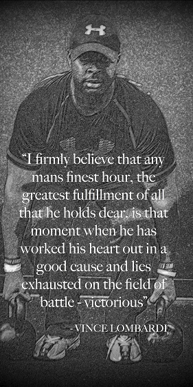

CRTC was created to provide an environment where both men and women of all skill levels can work together to improve their physical as well as mental well-being. We offer both morning and evening classes to accommodate one’s hectic schedule. Along with our Self-Defense and Fitness Programs, CRTC also provides training and certifications in a multitude of security and safety classes. Grab a shower after a grueling workout and head off to work or stick around and surf the net while relaxing in the Cannon Ridge lounge.
Gordon Johnson has been training in Krav Maga since 2006 with the Krav Maga Worldwide Organization. He currently teaches CRTC’s beginners Krav Maga classes. Certified through Nir Maman’s CT707 Israeli Special Forces Krav Maga, Mr. Johnson is dedicated to making each student feel confident and safe throughout their training here at CRTC.
Ron is a former high school and collegiate football player who has always been passionate about training. Over the last two years, he has been implementing his style of conditioning bootcamp throughout Fairfield county. Ron employs a positive reinforcement approach to fitness which keeps his students motivated from the time they walk through the door until the last set is complete.
Chris is a life long martial artist and personal trainer. He has studied Kickboxing, Boxing, Kung Fu, Muay Thai, and brings the martial arts principles to working with and teaching clients. He believes that everyone can achieve anything with the willpower, and positive support around them. His personal instruction uses techniques borrowed from centuries of martial arts proven to work with athletes of a wide array of sports as well as people just looking to start getting in shape.